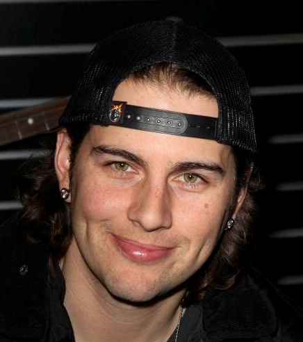

Avenged Sevenfold
Дебютный альбом, на котором преобладали панковые мотивы, а в качестве вокала часто использовался скриминг (2001).
Записан в стиле металкор, с элементами хеви-метала в отдельных песнях (2003).
Звук приблизился к классическому звучанию хэви-метала (2005).

Четвёртый студийный альбом группы, который дебютировал под номером 4 в Billboard 200 (2007).
Впервые для группы дебютировал на первом месте в Billboard 200 (2010).
Группа создала четыре оригинальные песни для серии Call of Duty: Black Ops, все они были собраны вместе в этом альбоме (2013).
Состав группы

Мэттью Чарльз Сандерс (англ. Matthew Charles Sanders; род. 31 июля 1981, Хантингтон-Бич, Ориндж, Калифорния), более известный как М. Шэдоус (англ. M. Shadows) — американский музыкант, вокалист метал-группы Avenged Sevenfold.
Захари́ Джеймс Бэйкер (англ. Zachary James Baker), более известный под вымышленным именем Заки Вэндженс (англ. Zacky Vengeance) — ритм-гитарист американской рок-группы Avenged Sevenfold.
Брайан Элвин Хейнер-младший (англ. Brian Elwin Haner, Jr.), американский гитарист-виртуоз, более известный как Синистер Гейтс (англ. Synyster Gates) — рок-музыкант и ведущий гитарист группы Avenged Sevenfold.
Джонатан Льюис Сьюард (англ. Jonathan Lewis Seward), более известный как Джонни Крайст англ. Johnny Christ — бас-гитарист группы Avenged Sevenfold. Джонни — третий басист группы, заменил Джастина Сэйна и Дэмеона Эша.
Брукс Вакерман (англ. Brooks Wackerman) — американский музыкант, в настоящее время барабанщик метал-групп Avenged Sevenfold и Mass Mental, бывший барабанщик Bad Religion. Младший брат Джона Вакермана и Чада Вакермана (бывший член группы Фрэнка Заппа). После ухода из Bad Religion, 4 ноября 2015 было объявлено, что Брукс заменит Эрина Элахая в качестве барабанщика Avenged Sevenfold.
Джеймс О́уэн Са́лливан (англ. James Owen Sullivan; 9 февраля 1981 — 28 декабря 2009) — американский музыкант, известный под сценическим именем The Rev, работавший с группами Avenged Sevenfold, Pinkly Smooth и Suburban Legends. 28 декабря 2009 года Салливан был обнаружен мёртвым в своём доме в Хантингтон-Бич.